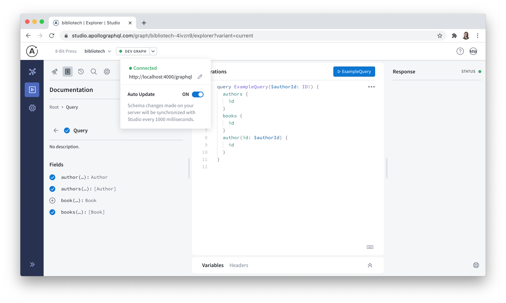

Chapter 1: Up and Running with GraphQL and Apollo Server
In this chapter, we will:
- Try running a query against the GitHub GraphQL API
- Use built-in Scalar types, define Object types, and create non-null and list fields
- Set up an Apollo Server with some basic type definitions and corresponding resolvers
- Add arguments to fields
- Run queries against a locally-running GraphQL API using Apollo Studio Explorer
Hello Schema, Nice to Meet You
The heart of any GraphQL is its schema. While a REST API provides a series of structured routes that can be used to read or write different resources based HTTP verbs, a GraphQL API will instead expose a single endpoint (often at /graphql) to query any of the data exposed by the API. If you’ve spent many years working with REST APIs, then you may immediately wonder how a single endpoint can do all of the heavy lifting for an API.
The answer is in the specially formatted query that we send to the GraphQL API endpoint. When sending requests to the API via HTTP, this query is often included in the body of a POST request. The GraphQL query language allows us to describe exactly what data we want to receive and in what shape we’d like to receive and—just like that—the GraphQL API will send a response back in precisely the format we requested as long as it’s compliant with API’s schema. If you’ve ever felt the pain of simultaneously over-fetching some data from an API while under-fetching the data you really wanted, and then subsequently needing to juggle various asynchronous requests and mash their responses together to finally populate all of the required data for a single view, then GraphQL will feel like a breath of fresh air for you.
Convention versus Specification
The GraphQL specification is a detailed document describing how to define a GraphQL schema, how to write queries against that schema, and how to build an execution engine (also known as a GraphQL server) to respond to those queries. It does not, however, specify anything about the transport mechanism used to shuttle requests to and from a GraphQL server. That said, HTTP is commonly chosen for the transport layer and GraphQL clients often send POST requests containing a serialized JSON representation of the query in the request body. Similarly, GraphQL servers often respond with JSON as well.
The POST verb is a common default for GraphQL requests because GET requests have size limits and complex queries may grow quite large. Additionally, a POST request’s body is encrypted over HTTPS, which will help limit potential exposure of any sensitive operation argument values included with the request. That said, tools like Automatic Persisted Queries allow you to hash GraphQL queries to ensure that they fit comfortably within GET requests limits, and thus allow you to take advantage of browser caches and CDNs.
GraphQL’s query language is very intuitive and the best way to learn it is to start writing queries. If you have a GitHub account, you can try sending a query to the GitHub GraphQL API using a browser-based tool available at https://docs.github.com/en/graphql/overview/explorer. After logging in with your GitHub account, the GraphiQL IDE will be active with a viewer query preloaded in it. Press the play button above the editor to view the response:
With an easy click of a button, you just made your first query to a GraphQL API! And as promised, you were able to query the API for a specific piece of information about the currently logged in-user (in this case, your username), and that data was returned as JSON and in a shape mirroring the original query.
Now that we’ve seen a query in action, let’s break it down piece by piece:
The entirety of what you see above is known as a document in GraphQL speak and that document contains an operation. In this case, it is a query operation that performs a read-only fetch operation, but there are also mutation operations that write and fetch data and there are subscription operations that can fetch data in real-time in response to source events.1
When performing query operations only we can optionally omit the query keyword in front of the curly brackets as a shorthand:
GraphQL Query
{
viewer {
login
}
}
Inside the outermost curly brackets, we are then left with the selection set of fields that specify the precise data that we want to receive in the response. Lastly, note that GraphQL syntax also supports comments by preceding comment text with the # character.
We’ve just unpacked several important GraphQL features using this basic query, but some important questions still linger. For one, how would we know that we were able to query a viewer from the GitHub API in the first place? And how do we find out what other fields can be queried for a viewer?
The answer to those questions is the schema—a GraphQL schema defines what types and fields are queryable through the API, as well as the relationships between types. A GraphQL schema also defines the root operation types that it supports, including query (required), mutation (optional), and subscription (optional). We can think of the fields belonging to these root operation types as the entry points to a GraphQL API.
One popular way to define a GraphQL schema is with the schema definition language (SDL). For example, to support queries for a viewer field on the query root operation type, the GitHub API contains the following definition:
type Query {
viewer: User!
}
Above, the query root operation type is defined as an Object type called Query and that type contains a single viewer field (in reality, the GitHub API’s Query type contains many more fields, but we’ll start with one to keep things simple). But where does User come from, and what is its relation to the nested login field we saw earlier? And what does the exclamation point after User mean? To answer these questions, we’ll need to dive into GraphQL’s type system.
Basic Types of Types
According to the GraphQL specification, types are the “fundamental unit” of a schema.2 We just saw an example of an Object type when we defined type Query with its viewer field above, and there are five other named types available in GraphQL that we can use too.
Scalar Types
The most basic type in GraphQL is a Scalar type. We can define custom Scalar types, but we typically start with the ones built into GraphQL. Out of the box, we can use Int, Float, String, Boolean, and ID Scalar types in a schema. The first four of those Scalar types represent exactly what they suggest. The ID type is a special-purpose Scalar type to indicate that a field is a unique identifier and that it will typically not be human-readable. Even if the ID value is numeric it should always serialize to a string.
In practice, the built-in Scalar types are used to specify the types that correspond to fields in a schema as follows:
type User {
bio: String
id: ID
isViewer: Boolean
pinnedItemsRemaining: Int
}
Object Types
But wait! We haven’t addressed how we were able to arbitrarily define type User in the last example. We have already seen an example of an Object type when we defined type Query previously, but we can also define Object types that are specific to our schema.
Object types are very powerful because they allow us to express relationships (or edges) between the different data types (or nodes) within our graph. If we think of the query root operation type as an entry point to our API, then Scalar types are the outer nodes in our graph where we finally reach the data. By connecting Object types through their fields, we can facilitate deeper traversal across the graph to these outer nodes.
In our simplified GitHub API schema, we can move from the root Query type to a single authenticated User via the viewer field. With the following modification, we can go one level deeper:
type User {
bio: String
id: ID
isViewer: Boolean
pinnedItemsRemaining: Int
status: UserStatus
}
type UserStatus {
emoji: String
id: ID
message: String
}
Here we see a powerful feature of GraphQL’s type system in action—the ability to define Object types as collections of related fields and then nest them within one another to define the relationships between those types that ultimately allow us to move from node to node across our data graph.
Much of a GraphQL schema will end up being composed of the Object types that you create, but there are still two specification-defined Object types that we should make note of before moving on. Those types are the Mutation and Subscription types that correspond to those root operations in an API. We’ll cover those types in-depth in Chapter 3 and Chapter 10 respectively.
And if you’re keeping count, you’ve probably noticed that we’ve only explored two of the six named types in GraphQL so far. Scalar and Object types will be all we need to begin building a functioning GraphQL API, so we’ll cover Input types in Chapter 3 and Enum, Interface, and Union types in Chapter 4 as we require them to build out additional API features.
Two Ways to Modify Types
By default, GraphQL expects that a field’s corresponding type is singular and that it may return null values. However, in addition to the named types we’ve already explored, the GraphQL specification outlines two different wrapping types that we can use “wrap” named types and modify their defaults.
Non-Null
To make a field non-null, we use an exclamation point. Making a field non-null means that a client consuming this API can always expect a value to be returned for this field, and if one is not available, then the query will return an error. We have already seen this where we defined the viewer field on the Query type:
type Query {
viewer: User!
}
As a further example, if we update the User type to reflect GitHub’s real API, then we would make the id, isViewer, and pinnedItemsRemaining fields non-null:
type User {
bio: String
id: ID!
isViewer: Boolean!
pinnedItemsRemaining: Int!
status: UserStatus
}
Best Practice: Think About Nullability Up Front
Non-null fields have the advantage of making API responses more predictable, but they come with the trade-off of making that API harder to evolve in some ways in the future. For example, if a non-null field is later transitioned to nullable or removed entirely from an Object type, then breaking changes may result for clients that assume the field value will be there.
The inherently evolvable nature of a GraphQL API combined with the risk of breaking changes where alterations to a field’s nullability are concerned is a good reason to take time to make an informed choice about whether a field should be nullable or non-null when it’s added to a schema.
When unforeseen circumstances require changes to field nullability in the future, you can use observability tooling to understand what clients are using that field in your API and then proactively help those affected client developers avoid breaking changes to user interfaces.
Lists
Fields can also output lists of types and we indicate such a list by wrapping the type name in brackets. If we wanted to add a non-null field to the User type that contained a list without any null items, we would update our code as follows:
type User {
bio: String
id: ID!
isViewer: Boolean!
pinnedItemsRemaining: Int!
status: UserStatus
organizationVerifiedDomainEmails: [String!]!
}
If we wanted to permit a potentially empty list or null items in the list, but still require an empty list to be returned (rather than a null value), then we would specify the field’s output type as [String]!. Similarly, if we wanted to allow the field itself to be nullable but disallow non-null values in the list, we would specify the field’s output type as [String!]. Lastly, to permit a nullable list of strings that may contain null values or be empty, we would specify the field’s output type as [String].
A GraphQL API to Call Our Own
We have now covered just enough GraphQL theory to roll up our sleeves and start building a GraphQL API from scratch with Apollo Server. To do that, we’ll need to define a schema and set up a GraphQL server to respond to client requests to our API.
Our objective is to build a new and improved version of the REST-based Bibliotech API using GraphQL. Under the hood, the new GraphQL API will use the existing REST endpoints as a data source—a step that many teams take to migrate to GraphQL within an organization. Later on, as the REST API is phased out, different data sources may be swapped in behind the GraphQL API and any clients presently making GraphQL requests will be none the wiser.
The Bibliotech API provides information about books, authors, and allows users to create a personal library of their favorite books, as well as rate and review them. In the final three chapters, we’ll also build out an MVP client application using React and Apollo Client to consume data from the new GraphQL API. The index page of the Bibliotech React app will look like this:

We’ll leverage the GraphQL API to build out additional pages to display a user’s favorite books, book search results, and a single book view. We will also need to create forms to authenticate users, add and update reviews, and add new authors and books. To begin, let’s create a project directory, cd into it, and then run the following command to set up the server directory:
mkdir server && cd server
Second, we’ll create a package.json file in the new server directory (the --yes flag creates the package.json file without asking any questions):
npm init --yes
Next, we’ll install some initial dependencies:
npm i apollo-server@2.22.2 concurrently@5.3.0 dotenv@8.2.0 graphql@15.5.0 json-server@0.16.3 node-fetch@2.6.1 nodemon@2.0.7
Let’s take a brief look at each of the packages we just installed:
apollo-server: Apollo Server is an open-source GraphQL server that will allow us to define a GraphQL schema and execute queries against that schema.concurrently: We can run multiple commands at the same time using this package. It also has support for shortened commands with wildcards.dotenv: This package loads environment variables from a.envfile intoprocess.env.graphql: Apollo Server requires this library as a peer dependency.json-server: This package allows us to instantly spin up a REST API using data from a JSON file, so we’ll use this to mock the existing Bibliotech API. You may wish to quickly review the JSON Server documentation if you haven’t used it before.node-fetch: This is a Node.js implementation ofwindow.fetchand it will facilitate fetching data from the REST endpoints.nodemon: Nodemon will automatically reload our server when files change in the project directory.
As an additional piece of configuration in the package.json file, we’ll set the type field to module so that we can use ECMAScript module syntax in our files:
server/package.json
{
// ...
"type": "module",
// ...
}
But First, a (Mocked) REST API
Before we can use the Bibliotech REST API as a backing data source for the GraphQL API, we’ll need to create a file from which JSON Server can query data. Create a db.json file in the server directory and add the following code to it:
server/db.json
{
"authors": [
{
"id": 1,
"name": "Douglas Adams"
}
],
"books": [
{
"id": 1,
"cover": "http://covers.openlibrary.org/b/isbn/9780671461492-L.jpg",
"summary": "After a Vogon constructor fleet destroys Earth to make way for a hyperspace bypass, the last surviving man, Arthur Dent, embarks on an interstellar adventure with his friend Ford Prefect (who, apparently, was an alien all along).",
"title": "The Hitchhiker's Guide to the Galaxy"
}
],
"bookAuthors": [
{
"id": 1,
"authorId": 1,
"bookId": 1
}
]
}
If you’re using version control in this project, you may wish to ignore the db.json file as we will be writing test data to this file as we build out the GraphQL API throughout this book.
JSON Server will automatically create an endpoint for each of the top-level properties in the db.json file. We’ll primarily use the /authors and /books endpoints for now, while the /bookAuthors endpoint will act like a join table would to capture the many-to-many relationship between authors and books. Next, we can make our lives easier by writing some custom routes for the REST API that will make the process of querying for all authors of a given book or all books by a given author a bit more intuitive than querying /bookAuthors directly. To do this, we’ll create a routes.json file in the server directory and add the following code to it:
server/routes.json
{
"/authors/:authorId/books": "/bookAuthors?authorId=:authorId&_expand=book",
"/books/:bookId/authors": "/bookAuthors?bookId=:bookId&_expand=author"
}
Lastly, we can remove the existing test script in the package.json file and replace it with a script to start up our brand new REST API:
server/package.json
{
// ...
"scripts": {
"server:rest": "json-server -w db.json -p 5000 -r routes.json -q"
},
// ...
}
Run npm run server:rest and try out the following endpoints to confirm they return the expected data before proceeding:
- http://localhost:5000/authors
- http://localhost:5000/books
- http://localhost:5000/authors/1/books
- http://localhost:5000/books/1/authors
Initial Type Definitions
With our REST API up and running, it’s time to define the first few types in the Bibliotech schema. First, we’ll create a subdirectory to organize our GraphQL-related code, as well as a typeDefs.js file to house our type definitions. We’ll create a graphql directory in server, add the typeDefs.js file to it, and then set up the new file as follows:
server/src/graphql/typeDefs.js
import { gql } from "apollo-server";
const typeDefs = gql`
# GraphQL type definitions will go here...
`;
export default typeDefs;
We’re going to define our type definitions as a string inside of a JavaScript file using SDL and then wrap that string in the gql template literal tag to convert it into the format that Apollo Server is expecting. As a bonus, the gql tag will enable GraphQL syntax highlighting within the string when the Apollo GraphQL VS Code extension is installed.
Next, let’s add some initial type definitions for the Author and Book Object types, as well as the root Query type with some related fields for querying lists of authors and books:
server/src/graphql/typeDefs.js
import { gql } from "apollo-server";
const typeDefs = gql`
type Author {
id: ID!
books: [Book]
name: String!
}
type Book {
id: ID!
authors: [Author]
title: String!
}
type Query {
authors: [Author]
books: [Book]
}
`;
export default typeDefs;
Getting lists of authors and books is useful, but we’ll also need a way to query a single author or book based on a unique identifier. To do that, we’ll add some new query fields with arguments. In our previous example with User Object type from the GitHub API, we mocked the organizationVerifiedDomainEmails field on the type as it is in the real API, but left out one key detail. This field accepts a login argument that represents the login of the organization from which to match verified domains. The real field looks like this:
type User {
# ...
organizationVerifiedDomainEmails(login: String!): [String!]!
}
Parentheses are used after the field name to indicate that the field accepts arguments, and inside, each of the arguments is listed by name with its corresponding type. In this above example, the login argument expects a non-null String to be provided when the field is queried.
For our API, we’ll add author and book fields that each accept a non-null ID as an argument, and return a single Author or Book respectively:
server/src/graphql/typeDefs.js
import { gql } from "apollo-server";
const typeDefs = gql`
# ...
type Query {
author(id: ID!): Author
authors: [Author]
book(id: ID!): Book
books: [Book]
}
`;
export default typeDefs;
The basic syntax for a query that contains field arguments is as follows:
GraphQL Query
query {
author(id: "1") {
name
}
}
Resolvers, aka Functions that Do the Data Fetching
With some type definitions in place, we now need a way to respond to API requests with real data. To do that, we must write resolver functions. The Apollo Server documentation3 provides the following concise definition of what a resolver function does:
A resolver is a function that’s responsible for populating the data for a single field in your schema. It can populate that data in any way you define, such as by fetching data from a back-end database or a third-party API.
Resolvers have the following function signature:
someField(parent, args, context, info) {
return "Hello, world!";
}
Let’s explore what each of the resolver’s parameters exposes in the function:
parent: GraphQL resolvers are executed in a chain starting at the top-most level of the query and working down toward the Scalar types at the outer edges. At each step, the field currently being resolved will have access to the data from the previously resolvedparentfield in the chain. For thequery,mutation, andsubscriptionroot operation types, this value will come from therootValuefunction passed to theApolloServerconstructor. You’ll often see this parameter named to reflect what the parent type is (for example, instead of naming the parameterparentit will be namedbookin field resolvers for theBooktype).args: This parameter is an object that contains any arguments supplied for this field as a part of the query. For the example in the previous section, we would expect theargsvalue of theauthorfield resolver to be{ id: "1" }.context: Thecontextparameter is another object and it provides us with a way to share data across all of the field resolvers for a given operation. For example, we may wish to include information from a decoded token to authorize access to different fields in our API. Thecontextobject is recreated with each request so we don’t have to worry about the data contained within going stale or inadvertently being shared across requests.info: The finalinfoparameter is typically needed for advanced use cases only and contains information about the field in question, a representation of the entire schema, an abstract syntax tree (AST) for the operation, and more.
Good to Know!
Resolver functions can return promises, so it’s OK to use the async keyword with them.
We’ll keep our resolvers organized in a separate file, so create a resolvers.js file in the server/src/graphql directory. We’ll structure the resolver functions in an object so that Apollo Server will be able to understand what resolvers correspond to which fields. We’ll begin by adding the following code to resolvers.js:
server/src/graphql/resolvers.js
const resolvers = {
Query: {
async author(root, { id }, context, info) {
// Fetch an author by ID here...
},
async authors(root, args, context, info) {
// Fetch all authors here...
},
async book(root, { id }, context, info) {
// Fetch a book by ID here...
},
async books(root, args, context, info) {
// Fetch all books here...
}
}
};
export default resolvers;
Note that each key nested in the object value of the Query key directly corresponds to a field name from the type definitions we just created. We have also marked each function as async because we must await a GET request to the mocked REST API to obtain the data that will be returned for the fields. Let’s update each resolver to fetch the appropriate data now:
server/src/graphql/resolvers.js
import fetch from "node-fetch";
const baseURL = "http://localhost:5000";
const resolvers = {
Query: {
async author(root, { id }, context, info) {
const res = await fetch(`${baseURL}/authors/${id}`).catch(
err => err.message === "404: Not Found" && null
);
return res.json();
},
async authors(root, args, context, info) {
const res = await fetch(`${baseURL}/authors`);
return res.json();
},
async book(root, { id }, context, info) {
const res = await fetch(`${baseURL}/books/${id}`).catch(
err => err.message === "404: Not Found" && null
);
return res.json();
},
async books(root, args, context, info) {
const res = await fetch(`${baseURL}/books`);
return res.json();
}
}
};
export default resolvers;
This code is all we need to take care of resolving data for fields on the Query type, but what about the Author and Book types? As you can imagine, if a schema contained many Object types with many different fields, then it could get very tedious to write resolvers for each field.
Luckily, if the parent object argument contains a property with a name that matches the field name, then Apollo Server will use a default resolver to automatically supply that value for the field. That means that id and name fields will be automatically resolved for the Author type and the id and title fields will be automatically resolved for the Book type because these properties are readily available in the objects fetched from the REST API.
However, because we expressed a many-to-many relationship between authors and books in our schema, we will need to provide a books field resolver for Author and an authors field resolver for Book. To do that, we’ll update our code:
server/src/graphql/resolvers.js
// ...
const resolvers = {
Author: {
async books(author, args, context, info) {
const res = await fetch(`${baseURL}/authors/${author.id}/books`);
const items = await res.json();
return items.map(item => item.book);
}
},
Book: {
async authors(book, args, context, info) {
const res = await fetch(`${baseURL}/books/${book.id}/authors`);
const items = await res.json();
return items.map(item => item.author);
}
},
Query: {
// ...
}
};
export default resolvers;
We now have all of the required code in place to resolve every field in the schema.
Wire Up Apollo Server
Now that we have type definitions and resolvers ready to go, we’re finally ready to create a new Apollo Server and start sending requests to the GraphQL API. We’ll instantiate an ApolloServer object in a top-level index.js file for our server application. Inside the server/src directory, create the index.js file first. To create an ApolloServer, we only need to pass in our typeDefs and resolvers and call its listen method to start it up (under the hood, Apollo Server runs on Express by default). We can do that in about a dozen lines of code in the new index.js file:
server/src/index.js
import { ApolloServer } from "apollo-server";
import resolvers from "./graphql/resolvers.js";
import typeDefs from "./graphql/typeDefs.js";
const server = new ApolloServer({
typeDefs,
resolvers
});
server.listen().then(({ url }) => {
console.log(`Server ready at ${url}`);
});
Just one last step! We’ll need a server:graphql script to start up the GraphQL API. In this script, we’ll set the --ignore option for Nodemon because we don’t need to restart the server every time a record is added, updated, or removed from db.json. For convenience, we’ll use Concurrently to create a top-level server script to start the REST API and GraphQL API together:
server/package.json
{
// ...
"scripts": {
"server": "concurrently -k npm:server:*",
"server:rest": "json-server -w db.json -p 5000 -r routes.json -q",
"server:graphql": "nodemon --ignore db.json ./src/index.js"
},
// ...
}
If we try running npm run server in the terminal now, then we should see both APIs start up. By default, the GraphQL API will be available at http://localhost:4000/ and we will access it at the /graphql path. We can take the GraphQL API for a quick test spin by opening another terminal tab or window and running this cURL command:
curl 'http://localhost:4000/graphql' -H 'Content-Type: application/json' -H 'Accept: application/json' --data-binary '{"query":"query { books { title id } }"}' --compressed
The following response output should appear in the terminal:
{"data":{"books":[{"title":"The Hitchhiker's Guide to the Galaxy","id":"1"}]}}
Congratulations! You are now the proud owner of a shiny, new GraphQL API.
Exploring the GraphQL API
Now that our API is up and running, it would be easier if we had a more visual way to experiment with it than cURL commands. There are many browser-based GraphQL IDEs to choose from today—we’ve already seen one such example when we used the embedded GraphiQL tool to try out the GitHub API. GraphQL Playground is another option, and it even comes bundled with Apollo Server. If you navigate to http://localhost:4000/graphql directly in your browser, you can explore your GraphQL API and run queries against it using GraphQL Playground right now.
Currently, one of the most feature-rich, browser-based IDEs designed for testing GraphQL operations is Apollo Studio Explorer. It includes a clickable query builder interface, operation history, and a spotlight-style search for browsing types and fields. Explorer is offered as a free feature of the Apollo Studio platform and examples throughout this book will demonstrate how to use it as a GraphQL IDE.
There are two different ways that you can access Explorer. If you would prefer to use it without creating an Apollo Studio account, you can navigate to https://sandbox.apollo.dev and update the sandbox URL to http://localhost:4000/graphql and you will be able to explore the Bibliotech GraphQL API immediately (skip to Page 21 for further directions on how to do so).
Alternatively, for a more feature-rich experience using Explorer (including a query history and additional customization settings), you can sign up for an Apollo Studio account by following these quick steps. First, navigate to https://studio.apollographql.com/ to register for a new account:
Click the “Create an account” link and then create a new account either using your email or GitHub account. Be sure to pick the “Local development” plan. Once your account has been created, you’ll have the option to choose a “Deployed” or “Development” graph. A deployed graph can take advantage of Apollo Studio features such as its schema registry, metrics reporting, and is typically meant for team collaboration. A development graph will poll your development server for schema updates as you work. For our purposes, we will choose a development graph. Be sure to give it a unique name and set the correct endpoint:
After creating your graph, Explorer will load with a demo query operation in the editor:

The auto update option will keep Explorer in sync with the schema in your local development environment.
Next, replace the demo query in the editor with the following operation document:
query {
authors {
id
}
}
Then click on authors: [Author] under the “Fields” subheading in the lefthand panel. Click the plus sign next to the name and books fields to automatically add them to the query (you can also type the field names into the editor if you prefer). Click and add more fields under the books field as well, and then press the “Run” button above the editor to execute the query:
In the image above, the table view has been toggled to display the results in a table format instead of the default JSON format. Keep this feature in mind when viewing complex lists of results. Before you move on to the next chapter, be sure to try out some of Explorer’s other features, such as the spotlight-style search (accessible from the magnifying glass icon at the top of the lefthand panel). And if you signed up for an Apollo Studio account, try out some of the various settings you can configure (from the gear icon) such as dark mode and editor hints.
As a final feature to highlight, Apollo Studio also provides a convenient interface for exploring the different types in your schema. As schemas grow in size, it can become increasingly difficult to have a bird’s eye view of all of the types in it, especially if all of those type definitions are contained within a single file. You can access an overview of all of your type definitions organized by type by navigating to the “Schema” page (it’s the first item in the lefthand navigation menu):
Introspection: The GraphQL Magic that Makes Tools Like Explorer Possible
You may wonder how it’s possible for tools such as Explorer to know so much about your GraphQL schema simply by sharing your API’s endpoint. A GraphQL schema can share information about itself via introspection. In practice, that means that a GraphQL API exposes a special __schema field on the query root operation type that allows us to request information about the API itself, such as the names of its various types and fields.
You can see introspection in action by running the following query:
{
__schema {
types {
name
fields {
name
}
}
}
}
Note that it’s considered a best practice to turn off introspection in production for non-public GraphQL APIs to prevent potential bad actors from learning about the detailed inner workings of the API by sending an introspection query to it.
Summary
We covered a lot of ground in this chapter, from learning how to write basic queries against a third-party GraphQL API, to creating type definitions for a schema of our own, and writing resolver functions to provide data for all of the fields in our API. We also learned about two named types in the GraphQL type system—Object and Scalar types—and learned how to add arguments to fields. Lastly, we saw how a visual tool like Apollo Studio Explorer can make it easy to experiment with a GraphQL API as we develop it.
In the next chapter, we’ll continue to add new Object types and additional query fields to the Bibliotech API while also adopting some best practices related to GraphQL API design and development.